César Augusto
Psicanalista especialista em homens que traíram
e querem reconstruir o casamento
⭐ Curso online · para homens
Reconstrução Masculina
Para o homem que traiu mas se arrependeu e está disposto a pagar o preço de reconstruir a si mesmo, restaurar a sua família e vencer a pornografia.
Quero me reconstruir →Curso online · para mulheres
Reconstrução Feminina
Para a mulher traída que quer se curar e reconstruir sua autoestima e autoconfiança.
Quero minha reconstrução →E-book · 5 partes
Depois da Traição
Um guia prático e acessível para reconstruir depois da traição, em 5 partes.
- A raiz: por que você traiu
- A reconstrução do homem
- A guerra contra a pornografia
- A restauração do casamento
- A prova real: você está curado?
O que os alunos estão dizendo
Prints reais de mensagens que recebo no WhatsApp e Instagram
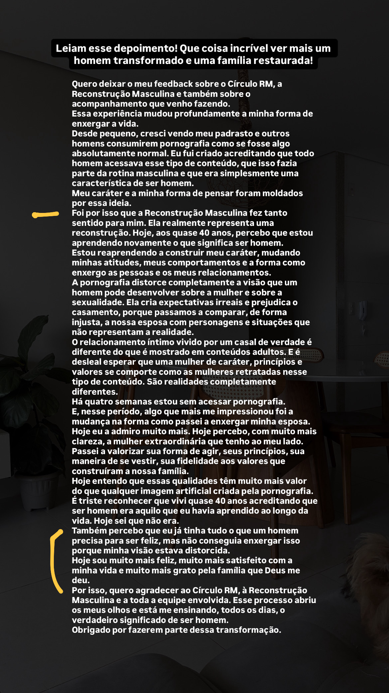
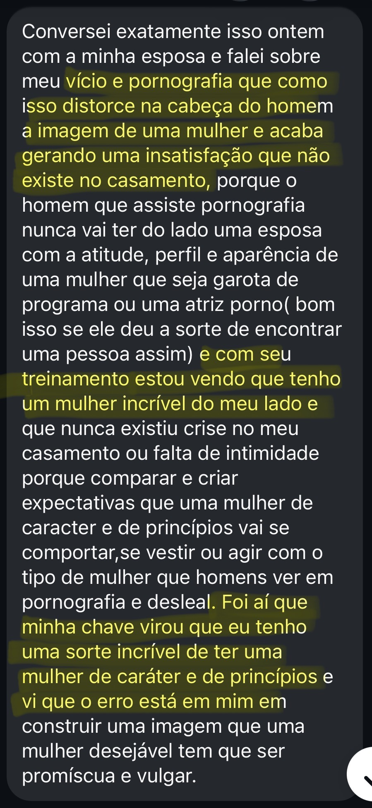
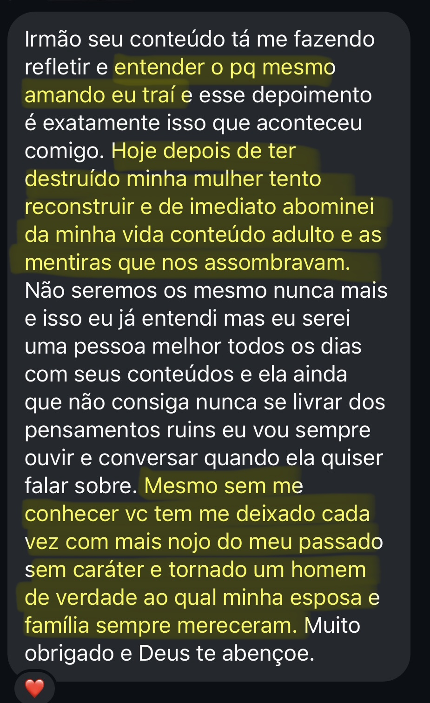
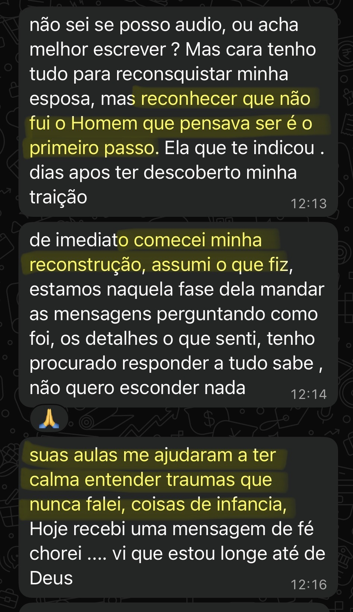
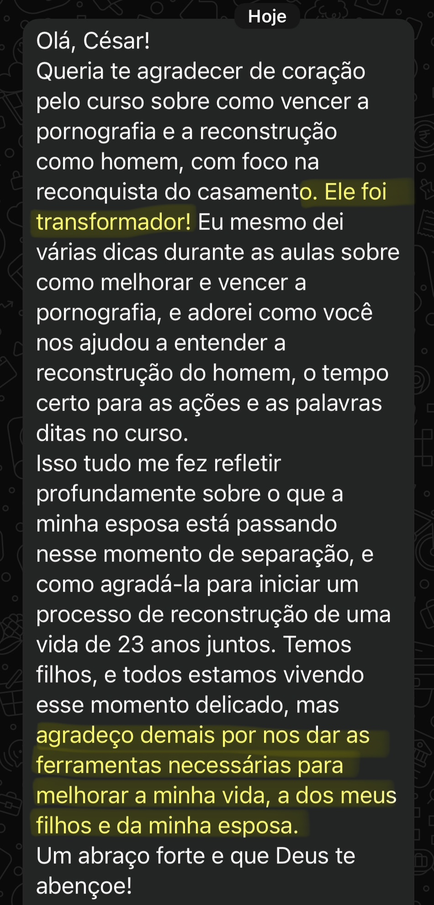
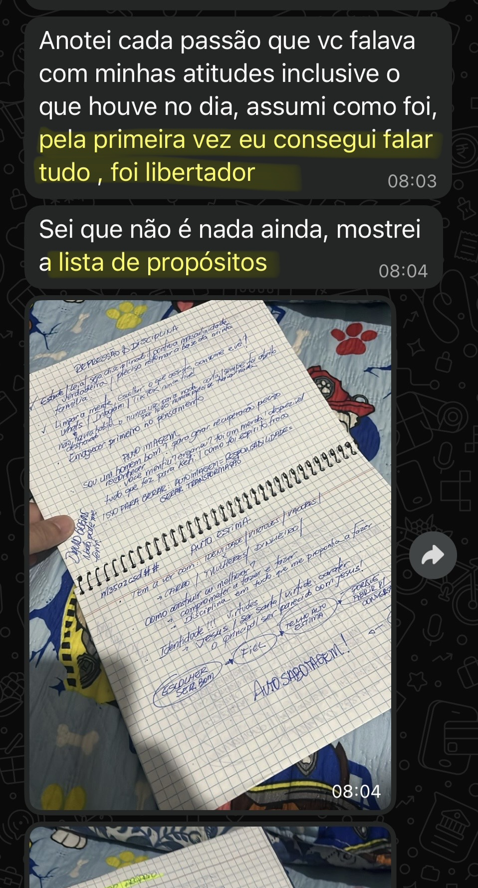
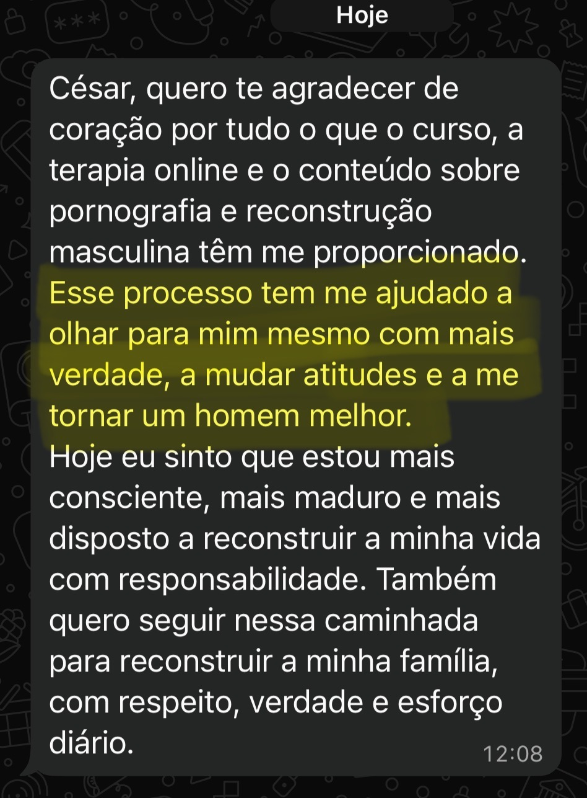
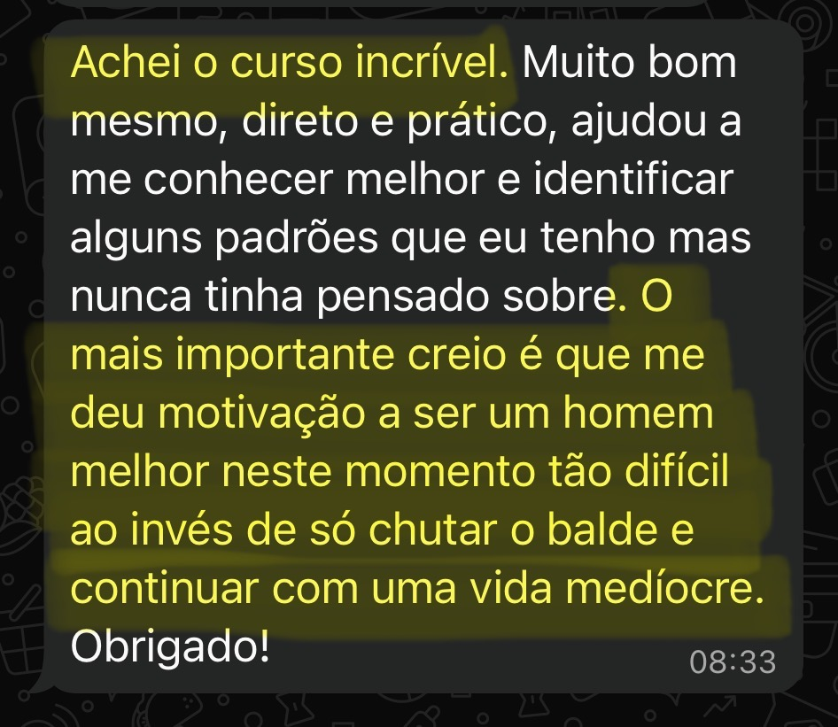
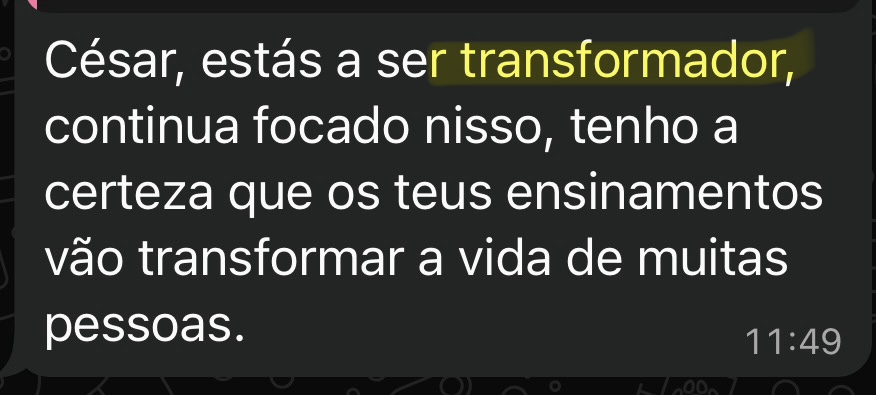
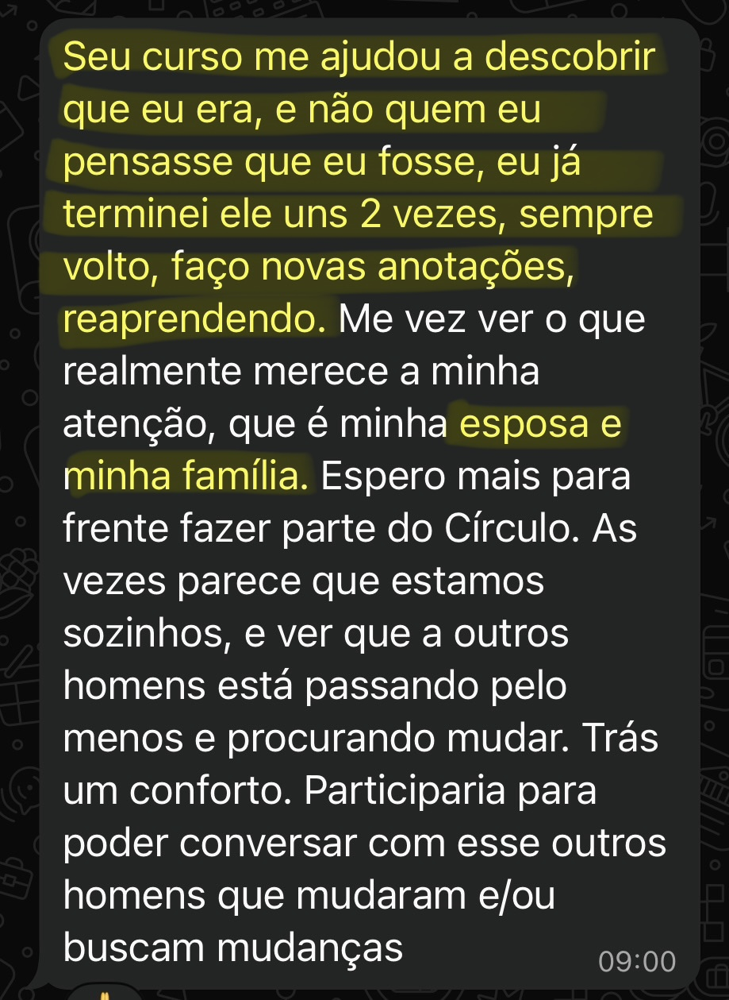
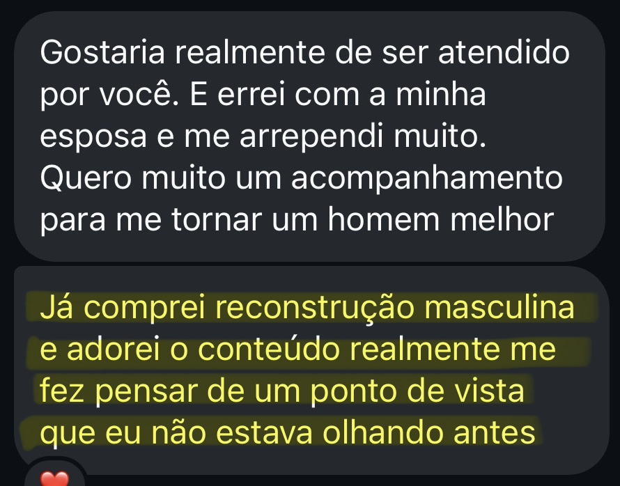
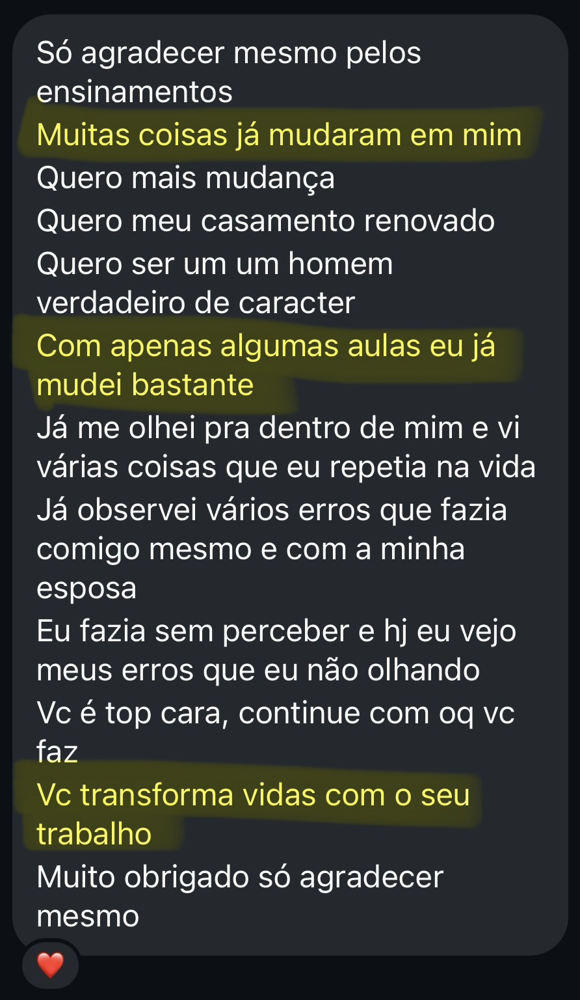
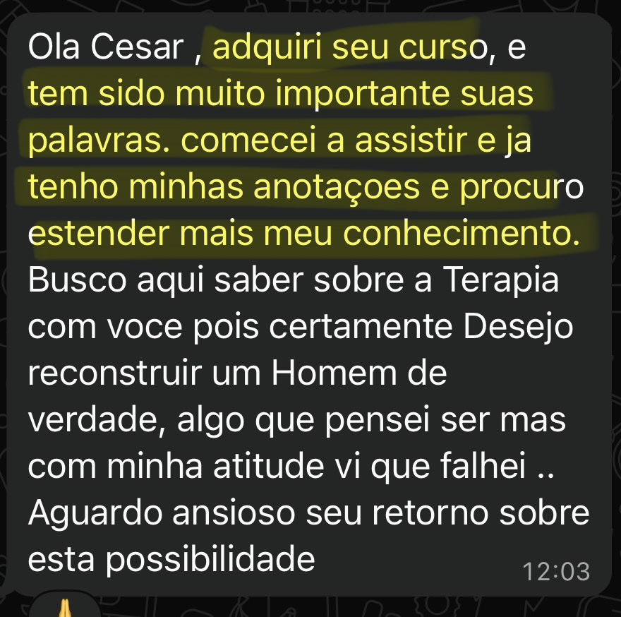
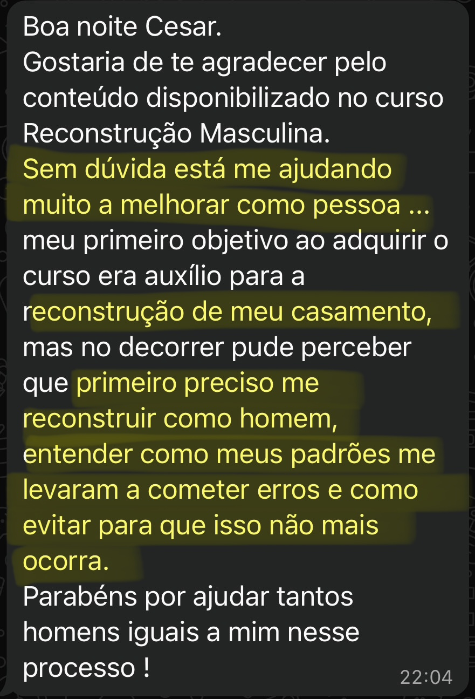
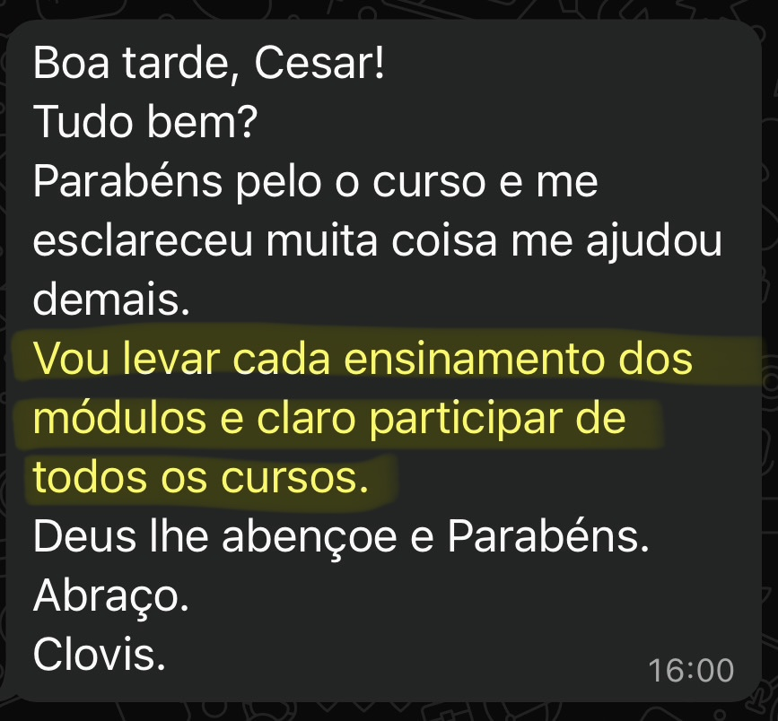
cesaraugustopsi.com.br